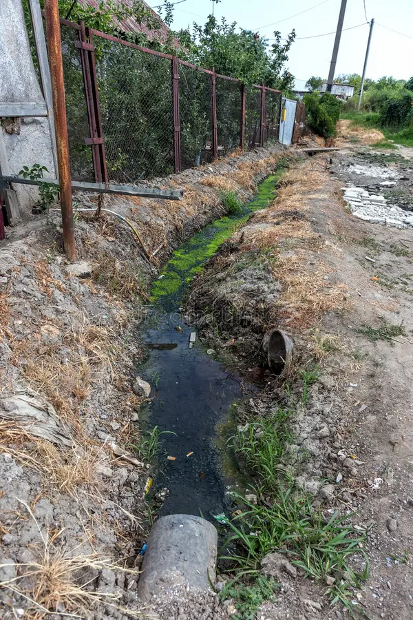

Algunos casos resueltos por la Municipalidad
Reparación de carretera en San Antonio
ANTES

DESPUÉS

Nuestro equipo municipal solucionó problemas de grietas y baches, mejorando la seguridad vial para todos los ciudadanos.
Limpieza de caños en San Rafael
ANTES

DESPUÉS
Se realizó limpieza y mantenimiento de caños obstruidos, previniendo inundaciones y mejorando el entorno comunal.